여~ NoSyu!
오늘 너의 생일을 축하한다.
참 기억하기 쉬워.
10월의 마지막 날.
이용씨가 부른 잊혀진 계절이라는 노래에서
'지금도 기억하고 있어요 시월의 마지막 밤을'
이라는 가사가 있잖아.
그래서 기억하기 쉽더라구.^^
물론 너가 태어나기 전에 나온 노래이지만...
이번 생일은 아마 기억이 오래 남지 않을까 싶다.
너 예전에 이런 글 적었지?
기부를 하고서 혼란에 빠져 적은 글.
기부가 제대로 이루어지는가 확인을 할 수 없어
기부금을 왕창 모아 재단을 설립하기로 다짐했었지?
하지만 그 후에 조금씩이라도 기부하기로 다짐했었지?
그래서 너는 이렇게 생각했어.
'나의 수입의 10%를 기부금으로 잡고,
나머지 90%로 생활하자.
그리고 기부금의 10%를 매년 기부하고,
나머지 90%를 훗날을 도모(?)하자.'
그 첫 걸음을 오늘 시작하기로 다짐했었지.
왜냐하면 자신의 생일은 변하지 않고 잊혀질 수 없으니까...
특히 10월의 마지막 날인 너의 생일은 더더욱....
지금까지 기부금으로 총 38만원 정도를 모았지.
그 중 4만원은 기부를 하였기에 34만원이 있어.
거기에 10%인 3만 4천원.
반올림해서 34,500원을 이번에 기부하는거야.
이번 기부는 네이버 해피빈을 이용하기로 했다며?
그리 나쁘지는 않지만, 좋은 것도 아니라 생각해.
중간에 무엇인가를 두고 이루어지는 거래(?)는
중간에서 어떤 일이 일어날지 모르거든.
하지만 다양한 단체를 그만큼 정리한 곳이 없기에
그 곳을 이용하기로 했다는 너의 생각도 일리가 있어.
[caption id="" align="aligncenter" width="597" caption=" "]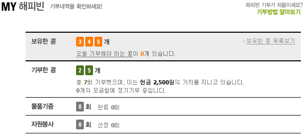[/caption]
그 곳은 콩이라는 이름으로 기부가 이루어지더구만.
콩 하나당 100원을 뜻하니
34,500원이 345개의 콩으로 바뀌었네.
자.. 그럼 이제 기부를 해보자구.
너는 기부에 있어 가장 크게 두는 것이 굶지 않는 것이라고 했지?
고등학교 보건시간에 배웠다며?
사람의 욕구에는 여러 종류가 있는데
'생리적 욕구, 안전의 욕구, 사랑의 욕구, 존경의 욕구, 자아실현의 욕구'
이렇게 나누어져 있다는 것을 말이야.
이런 욕구들이 피라미드처럼 있어서
왼쪽에 있는 것이 만족되어야 다음 욕구가 생긴다는 것을 배웠지.
따라서 생리적 욕구가 충족되지 않는 상황에서는
안전의 욕구를 느끼지 못하고
결국 자아실현을 하지 못한다는 것을 배웠어.
따라서 너는 생리적 욕구를 충족 못하는 사람에게
너 자신이 도움을 주자고 약속했지.
생리적 욕구에는 '식욕, 배설, 수면, 성욕'이 있는데,
그 중 가장 첫 번째인 식욕을 해결하기로 결심했다는 것을 기억해.
자.. 이제 그 기준에 따라 찾아보자구.
여러 곳이 있던데 넌 세 곳을 선택했어.
이웃과 북한 사람에게 음식을 나눠주는 곳이야.
이제 해당 단체에 대해 살펴봐야겠지?
먼저 부스러기사랑나눔회야.
[caption id="" align="aligncenter" width="541" caption=" "]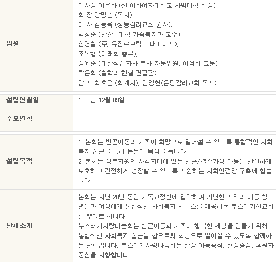[/caption]
너가 그리 좋아하지 않는 기독교이기는 하지만,
'네 이웃을 네 몸같이 사랑하라(마태복음 22장 39절)'를
믿고 행하는 사람들이라 생각하는거야.
이 곳에서 할 수 있는 기부 중 너는
'[빈나2020운동]빈곤결식아동지원사업'을 선택했어.
[caption id="" align="aligncenter" width="400" caption=" "][/caption]
콩은 100개. 즉, 10,000원을 기부하였지.
다음으로 풍양푸드뱅크야.
[caption id="" align="aligncenter" width="532" caption=" "]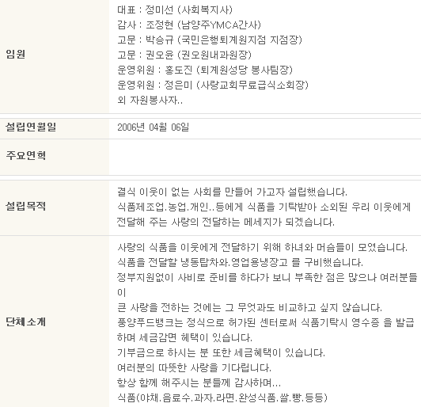[/caption]
이 곳은 개인이 하는 일이야.
어쩌면 도움이 가장 필요한 곳인지도 모르지.
살펴보니 결식 이웃들에게 식품을 나눠주는
너에게 정말 딱 맞는 곳이라고 생각해.
너가 행한 기부는 '도시락사업'이지?
[caption id="" align="aligncenter" width="400" caption=" "]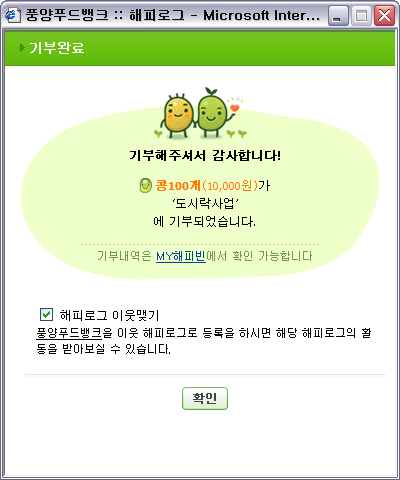[/caption]
여기도 10,000원을 기부했구나.
다음은 한민족복지재단이야.
[caption id="" align="aligncenter" width="330" caption=" "]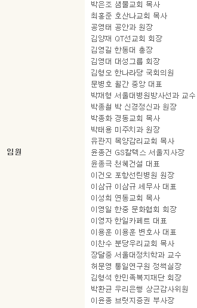[/caption]
하지만 넌 실망했어.
다른 것은 다 좋았지만, 대표자라고 나오는 사람 때문이지.
박은조 샘물교회 목사.
너가 기독교를 싫어하게 된 장본인이라는 것을 알아.
그리고 임원을 살펴보니 빵빵하네.
굳이 너가 도와주지 않아도 문제없겠다고 생각해.
전에 어떤 사람이 말하길 부자가 가난한 사람보다 도덕적이래.
왜냐하면 부자는 빈자보다 사회에 좋은 일을 크게 할 수 있기 때문이래.
그 아저씨가 좋아하는 단체의 사람도 있으니 알아서 잘 돌아갈거야.
넘겨버려.
그럼 어느 곳을 지원할까 나도 고민이었어.
그 때 너가 무료 급식이 생각났다니 다행이야.
'무료 급식 -> 아이들 -> 소년소녀가장'
그래서 너는 소년소녀가장을 돕기로 했지.
[caption id="" align="aligncenter" width="534" caption=" "]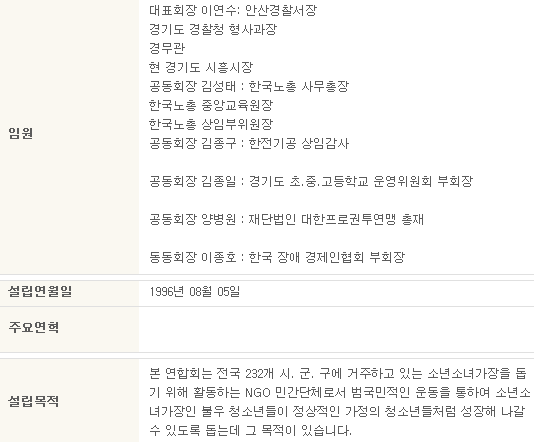[/caption]
임원은 여전히 빵빵하지만, 그래도 믿을만한 곳이라 생각하지?
이 곳에는 기부가 하나밖에 없네?
기부가 조금 두루뭉실하여 그리 믿음이 가지 않아.
[caption id="" align="aligncenter" width="400" caption=" "]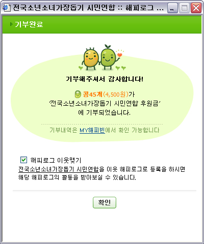[/caption]
따라서 너는 4,500원만 기부했어.
내 생각에도 두루뭉실한 것을 좋지 못하다고 생각해.
그럼 나머지 10,000원이 남았네.
그 때 나는 예전에 Mr.Dust님이 기부하신 월드비전이 떠올랐어.
혹시나 하는 마음으로 살펴보니 역시 해피빈에 있더구만.
[caption id="" align="aligncenter" width="543" caption=" "]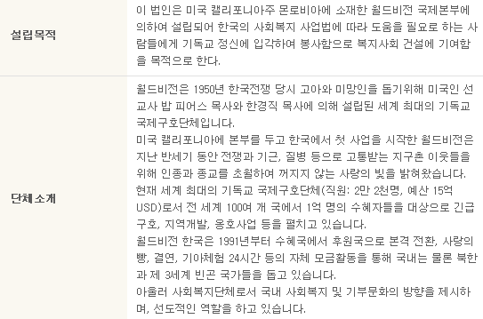[/caption]
이 곳 역시 빵빵하더만.
그래도 도움을 주는 것이 좋겠지?^^
너가 기부를 하기로 결심한 곳은
'북한 어린이들에게 사랑의 감자를'였어.
내 생각에도 좋다고 생각해.
앞에서 포기한 북한 사람 지원을 여기서 할 수 있으니까...
[caption id="" align="aligncenter" width="400" caption=" "]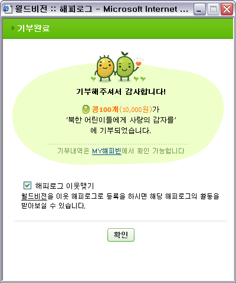[/caption]
나머지 10,000원을 여기에 다 넣었지.
참으로 어렵구나.
기부를 한다는 것이....^^
그러고보니 넌 기부금을 너의 수입.
그러니까 너가 일해서 번 돈의 10%를 하기로 했지.
용돈은 부모님의 사랑으로 주시는 것이니 제외하기로 했어.
그렇게 되면 복학을 하고 학교를 다니는 동안은
수입이 거의 없기에 기부금을 마련할 수 없게되지.
따라서 너는 블로그를 이용하기로 했어.
너가 예전에 한 맹세를 깨면서
애드클릭스를 설치하였어.
그 수입 전부를 기부하기로 한다는 다짐과 함께...
그런데 왜 이번에는 하지 못했지?
[caption id="" align="aligncenter" width="188" caption=" "]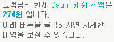[/caption]
그건 돈이 부족했기 때문이야.
274원.
[caption id="" align="aligncenter" width="506" caption=" "]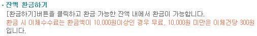[/caption]
잔액을 환금하기 위해서는 300원의 수수료가 필요한데,
274원을 환금한다는 것은 이상하지.
사실 애드클릭스는 오른쪽 메뉴 하단에 있어.
보고서를 보면 한 건의 클릭도 발생하지 않더라구.
사실 나 같아도 클릭하고 싶지 않겠다.
다른 곳으로 옮겨볼까 생각했지만,
내 블로그의 글을 읽는 사람이 광고에 짜증내지 않도록 하기위해
소심한 나는 구석에서 벽 보고 애드클릭스를 그릴 수 밖에 없어...
답답하기는 하지만,
나 역시 본문에 광고가 있는 것을 그리 좋아하지는 않는터라
내가 매일 찾아오고 가장 많이 읽어보는 너의 블로그에서
광고가 눈에 들어온다는 것은 그리 유쾌한 일은 아닐거야.
여하튼 오늘 생일인데 수고 많았다.
메일함을 보니 너의 생일을 축하하는 메일이 많더만.
다들 로봇이 보내준 것이지만...
휴대폰을 보니 역시 비슷한 문자가 날라왔더만....
그래도 사람이 직접 보내준 문자도 있으니 다행이네.
다시 한 번 생일 축하한다.
그리고 다음 생일에도 같이 일을 진행하자구.
참조
고등학교 체육1(교학사) 265쪽